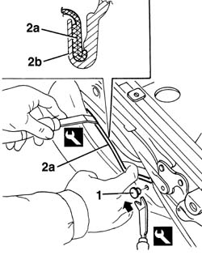
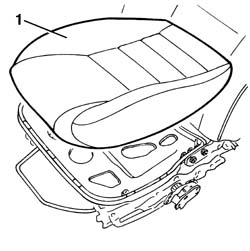
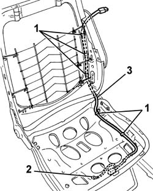

5580C92 connecting lead in seat for side air bag module r r
- Path
- Procedures > 55 ELECTRICAL EQUIPMENT > 5580 SPECIAL ACCESSORIES > 5580C air bag system > 5580C92 connecting lead in seat for side air bag module r r
- Kind
- repair procedure (removal / refitting; the operation number is the code)
- Applies to
- all engines; all production periods
- Interactive page
- https://sloeber94.github.io/elrnDB-a156/en/#/3238538
Applies to: all engines; all production periods
 Removing
Removing
 Refitting
RefittingTake the following precautions.
7045A10 l/h or r/h front seat (one) - r+r
7045B10 l/h or r/h front seat head restraint - r+r
7045A25 squab lumbar knob - r r
7045A44 seat interior guard - r r
5580C44 front side bag module one lh or rh r r
1. Prise up the retaining stud from both sides of the seat using the special tool.
 | Name | Country |
|---|---|---|
1 | Scraper blade | 1.823.015.000 |
2. Prise up trim surround (2a) using the special tool. Start from one lateral end. The detail in the figure shows a cross-section of profile (2b) securing trim (2a) in place.
| Name | Country |
|---|---|---|
2 | Scraper blade | 1.823.014.000 |

Applies to: all engines; all production periods
1. Fold down the seat and remove the padding with the cushion trim.

Applies to: all engines; all production periods
1. Open the wiring harness retaining collars.
2. Remove the rivet securing the earth ring on the seat bottom.
3. Remove the wiring harness.

Applies to: all engines; all production periods
Refitting
RemovingCheck that the wiring is not damaged, and if necessary carry out the appropriate continuity checks.
Position the wiring in its seating.
Rivet the earth ring.
Secure the wiring to the retaining bands.
Refit the cushion with trim.
Fit the cover surround.
Do up the retaining studs on both sides of the seat.
Mould the cover on the padding.
5580C44 front side bag module one lh or rh r r
7045A44 seat interior guard - r r
7045A25 squab lumbar knob - r r
7045B10 l/h or r/h front seat head restraint - r+r
7045A10 l/h or r/h front seat (one) - r+r
Connect the battery.
Check system operation using the Examiner or another tester.
Topics linked from this page (8)
- 5580C44 front side bag module one lh or rh r r
- 7045A10 l/h or r/h front seat (one) - r+r
- 7045A20 SQUAB COMPLETE with a front seat with air-bag, height adjustment and lumbar adjustment, left or right - R.R.
- 7045A24 squab knob - r r
- 7045A25 squab lumbar knob - r r
- 7045a43 seat exterior guard - r r
- 7045A44 seat interior guard - r r
- 7045B10 l/h or r/h front seat head restraint - r+r